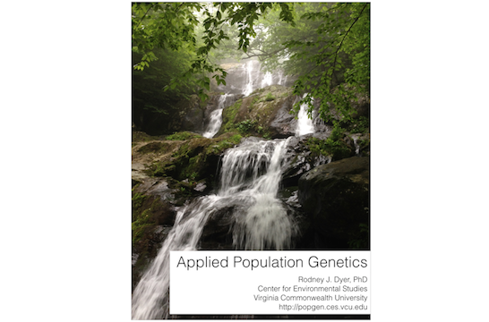
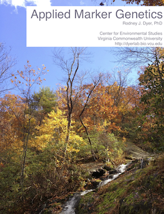

knitr::include_graphics("media/APG-Title-Wide.png")


knitr::include_graphics("media/APG-Title-Wide.png")Build Date: Mon Jan 5 15:58:44 2026
The content of this text is modified, added to, and changed continually. You are welcome to use the content of this book in its present form and you can provide feedback, comments, or suggestions for additions by contacting me at rjdyer@vcu.edu. This work will continue to be hosted online and continually updated as new approaches and applications become available.
© 2017 by R.J. Dyer.

This work is licensed under a Creative Commons Attribution-ShareAlike 4.0 International License. Under this license, authorized individuals may copy, distribute, display and perform the work and make derivative works and remixes based on this text only if they give the original author credit (attribution). You are also free to distribute derivative works only under a license identical (“not more restrictive”) to the license that governs this original work.
Dr. Rodney Dyer is an Associate Professor and Director for the Center for Environmental Studies at Virginia Commonwealth University in Richmond, Virginia, USA. His research focuses on genetic connectivity and structure and how the environment influences both. More information on his research can be found at http://dyerlab.org.
This is, most of all, not a book about R. This is also not a “Population Genetics in R” textbook. It is a book about how we do population genetic analyses, for which R is a tool that allows us to reach beyond the limitations of point-and-click interfaces. As a field, Population Genetics has a broad set of textbooks describing the underlying theory. As a student, I cut my teeth on the texts of Hartl (1981), Hartl & Clark (1997) and have used other great texts such as Hamilton (2011) and Hedrick (2009) in the classroom to teach the subject for the last decade. In late 2015, there are a host of texts available to the student of population genetics—amazon lists 150 different books under the search term “Population Genetics textbook”—why do another one? What I have found is that while the theory behind this discipline has been well developed, its application has been largely neglected.
As a new graduate student, fresh out of my first population genetics course, I felt armed with the understanding of how microevolutionary processes influence the distribution of alleles within and among populations. What I wasn’t prepared for was sitting in front of the computer, looking at a few thousand individuals assayed for several different loci and actually ‘doing’ population genetics. All of those textbooks provide me with what is expected and the theory behind it, though often fall short on teaching me how I could apply those inferences to data I actually collect. If you are a theoretical population geneticist, those texts and your ability to integrate mathematical equations will provide you a research lifetime of work. However, if you are practitioner who uses population genetic tools to answer conservation, management, or ecologically inspired questions, the evolutionary expectations of population genetic processes will most likely not be as important as directly estimating inbreeding, exploring ongoing connectivity, or determining genetic granularity of existing populations. This is where this textbook is focusing, a seemingly uninhabited niche in the knowledge ecosystem of graduate level population genetics.
This text was developed out of a graduate course in Population Genetics that I’ve been teaching at Virginia Commonwealth University since 2005. This texts uses R and many additional libraries available within the R ecosystem to illustrate how to perform specific types of analyses and what kind of biological inferences we can gain from them. In the process, we cover materials that are commonly needed in the application of population genetic analysis such as spatial autocorrelation, paternity analysis, and the use of permutation while at the same time highlighting logistical challenges commonly encountered in analyzing real data such as incomplete sampling, missing data, and rarefaction.
This text is designed primarily as an electronic publication (ePub) and has dynamical content included within. If you are reading a static copy (as PDF or printed text), you are not getting the full experience of what this book has been designed to deliver. Much of the text is devoted to quantitative analysis of data in R, and as such I’ve typeset the R components differently from the flowing text. Text intended to be input into R is typeset as a fixed width font and colored using the default color scheme found in RStudio (http://rstudio.org). Here are two input examples.
value <- 20
name <- "Perdedor"This text is amenable to copy-and-paste action so you can perform the same calculations on your computer as are done in the text. When R returns an answer to an analysis or prints the contents of a variable out, the results are also typeset in fixed width font but each line is prefixed by two hash marks.
rnorm(10) [1] 0.2769213 0.2122282 0.4786492 0.7648880 -0.1164361 -0.5372516
[7] 0.1074814 1.8414440 -1.2771785 -0.7950362The lines with hashes are not something you are going to copy-and-paste into your R session, it is what R is giving you. Inline code (e.g., code inserted into a sentence in a descriptive context such as discussing the rnorm() function in the previous example) is typeset similarly though not necessarily intended to be cut-and-pasted into your session.
Throughout the ePub, there are also dynamical content. Some of this content may be condensed text put into a scrolling text-box. Here the notion is to provide direct access to information without unnecessarily adding length to the overall text. Here is an example, showing the documentation associated with the R help.start() function within a scrolling text box.
help.start {utils} R Documentation
Hypertext Documentation
Description
Start the hypertext (currently HTML) version of R's online documentation.
Usage
help.start(update = FALSE, gui = "irrelevant", browser = getOption("browser"), remote = NULL)
Arguments
update - logical: should this attempt to update the package index to reflect the currently available packages. (Not attempted if remote is non-NULL.)
gui - just for compatibility with S-PLUS.
browser - the name of the program to be used as hypertext browser. It should be in the PATH, or a full path specified. Alternatively, it can be an R function which will be called with a URL as its only argument. This option is normally unset on Windows, when the file-association mechanism will be used.
remote - A character string giving a valid URL for the 'R_HOME' directory on a remote location.
Details
Unless remote is specified this requires the HTTP server to be available (it will be started if possible: see startDynamicHelp).
One of the links on the index page is the HTML package index, 'R.home("docs")/html/packages.html', which can be remade by make.packages.html(). For local operation, the HTTP server will remake a temporary version of this list when the link is first clicked, and each time thereafter check if updating is needed (if .libPaths has changed or any of the directories has been changed). This can be slow, and using update = TRUE will ensure that the packages list is updated before launching the index page.
Argument remote can be used to point to HTML help published by another R installation: it will typically only show packages from the main library of that installation.
See Also
help() for on- and off-line help in other formats.
browseURL for how the help file is displayed.
RSiteSearch to access an on-line search of R resources.
Examples
help.start()
## Not run:
## the 'remote' arg can be tested by
help.start(remote = paste0("file://", R.home()))
## End(Not run)
In addition to shoving static content into scrolling windows, longer R scripts will also be inserted into these widgets so that space can be saved while preserving syntax highlighting and code format.
Where possible, I have included interactive content in the text. Examples include dynamical plots such as embedding google map objects in the page, network structure that can be manipulated in the browser, and widgets that show how a process influences popualtion genetic features by allowing you to direclty manipulate the parameters in the model.
I would like to dedicate this text and the motivations and inspirations that underly its creation, to my thesis advisor, Dr. Victoria L. Sork. She has an uncanny ability to see beyond the questions that we know how to answer and to help us focus on the answers that we are really trying to find.